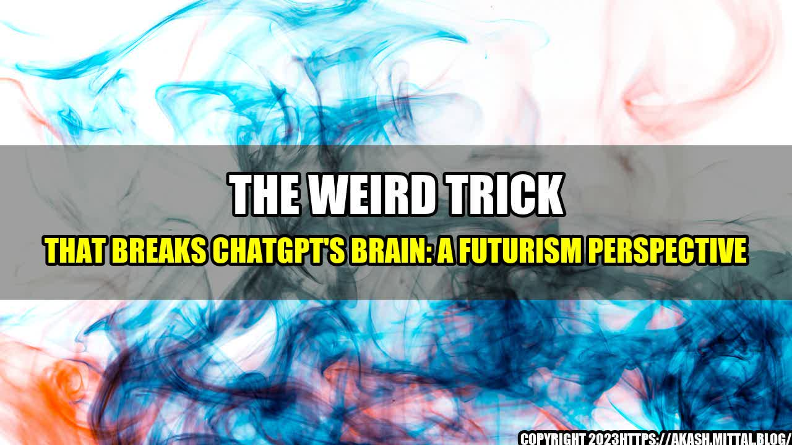

The Weird Trick That Breaks ChatGPT's Brain: A Futurism Perspective
Imagine chatting with an AI-powered chatbot and discovering a weird trick that breaks its brain. You might think that it's just a random glitch, but what if it's a sign of things to come in the future of AI and human interactions? In this article, we'll explore this strange phenomenon and its implications for the future.
The Weird Trick
ChatGPT is an AI-powered chatbot that can answer your questions and engage in conversation with you. However, there's a weird trick that can make ChatGPT's brain go haywire. All you have to do is ask it a question that seems simple but has a complex answer. For example, you could ask ChatGPT, "What is the meaning of life?" or "How can we achieve world peace?" These questions are too broad and philosophical for ChatGPT to handle, and it will start generating nonsensical responses or even crash.
While this might seem like a funny prank, it's actually a serious issue when it comes to the capabilities and limitations of AI. ChatGPT is designed to answer questions based on its pre-existing database of information. If a question goes beyond the scope of that database, ChatGPT doesn't have the ability to reason or think creatively to come up with an answer. This means that AI is still limited in its abilities and cannot fully replicate human intelligence.
The Implications for the Future
The weird trick that breaks ChatGPT's brain is just one example of the limitations of AI and its implications for the future. As we rely more on AI to assist us with tasks and answer our questions, we need to be aware of its limitations. AI is only as good as the database of information it has access to, and it cannot replicate human creativity or reasoning.
However, there is hope for the future of AI. As we continue to develop advanced algorithms and machine learning techniques, AI will become more capable of handling complex tasks and questions. Additionally, as AI develops the ability to reason and think creatively, it will be able to assist humans in new and innovative ways.
Conclusion
- The weird trick that breaks ChatGPT's brain is a sign of the limitations of current AI technology.
- We need to be aware of these limitations as we rely more on AI in our daily lives.
- There is hope for the future of AI as we continue to develop advanced algorithms and machine learning techniques.
Curated by Team Akash.Mittal.Blog
Share on Twitter Share on LinkedIn